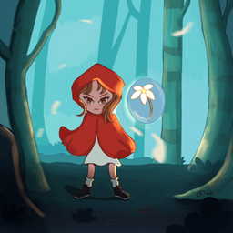

The Lost Bloom
You play as a girl who live in a world that can only have lights when a flower is placed in a certain place at a mountain. But suddenly, one day, only YOU was shining and all the world is full of dark. You were the chosen one to save the world and return the light back to the world by returning the flower to its own place.